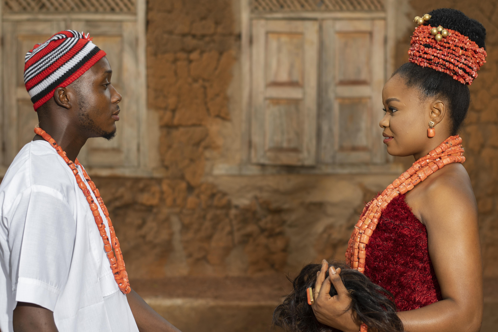
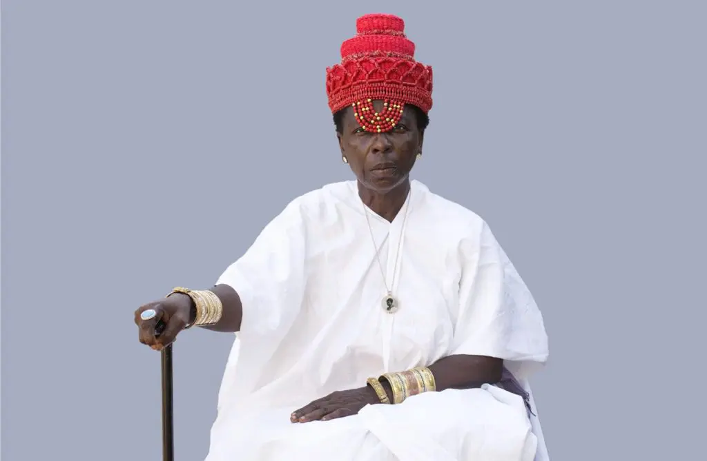

Contexte
Contexte des oeuvres d'Ishola Akpo
Les œuvres photographiques d'Ishola Akpo se situent à la croisée du documentaire
et de la proposition artistique.
En effet, l'artiste visuel et photographe béninois,
exploite habilement les possibilités du numérique.
Dans ses œuvres, il fusionne avec subtilité les concepts de modernité et de
tradition, créant ainsi une symbiose captivante. En naviguant à travers différents
niveaux de lecture, il élabore des métaphores riches et diversifiées. Son art
transcende les limites entre réalité et fiction, entre identités statiques et
identités multiples, délivrant ainsi un impact visuel saisissant, reliant le passé
au présent et à l'avenir.
Plus précisément, les photographies d'Akpo jettent un regard sur les pratiques
culturelles du Bénin. À travers son objectif, il capture l'essence de ces rites
et traditions, offrant une perspective documentaire tout en injectant
une dimension artistique à ses compositions visuelles.
Quelques thématiques abordées par Ishola Akpo
La dot ou le mariage traditionnel

Au Bénin, le mariage traditionnel est une affaire qui implique non seulement le couple,
mais aussi les deux familles qui décident de l'union pour leurs enfants.
La dot, composée d'effets et d'ustensiles de cuisine, est donnée à la famille
de la mariée comme signe d'accomplissement des prescriptions coutumières. La dot inclut notamment la cola,
symbole des fiançailles, et le sel, symbole du goût dans la vie conjugale.
L'argent accompagnant la dot varie selon les moyens du marié et symbolise son engagement
financier envers sa future épouse. Les cérémonies varient selon la religion du couple
et sont suivies de réjouissances.
Les femmes et le pouvoir

La plupart des récits historiques et des archives présentent la royauté comme un domaine réservé aux hommes. Les quelques exceptions à cette règle se concentrent généralement sur les célèbres reines européennes ou les épouses de monarques qui ont marqué l'histoire occidentale. En revanche, en ce qui concerne l'Afrique noire, les femmes royales sont souvent négligées, que ce soit dans les écrits historiques ou dans la tradition orale.
Parmi ces reines africaines oubliées, Tassi Hangbé, qui régna au Dahomey (actuel Bénin) au XVIIIe siècle, mérite une mention particulière. Elle a marqué son époque par son leadership exceptionnel et sa contribution significative à l'histoire de son royaume. Tassi Hangbé est notamment connue pour avoir consolidé le pouvoir du Dahomey après une période tumultueuse et avoir pris des mesures stratégiques pour renforcer l'économie et la stabilité du royaume pendant son règne, qui a duré de 1716 à 1732.
Malheureusement, bien que son règne ait été marquant, l'histoire écrite et la tradition orale ont souvent relégué Tassi Hangbé au second plan. Cependant, de nombreux artistes contemporains, tels que le photographe béninois Ishola Akpo, ont entrepris des travaux pour lui rendre hommage. À travers des expositions artistiques et des projets multimédias, ces artistes contribuent à rétablir la reconnaissance que Tassi Hangbé mérite en tant que figure majeure de l'histoire du Bénin.